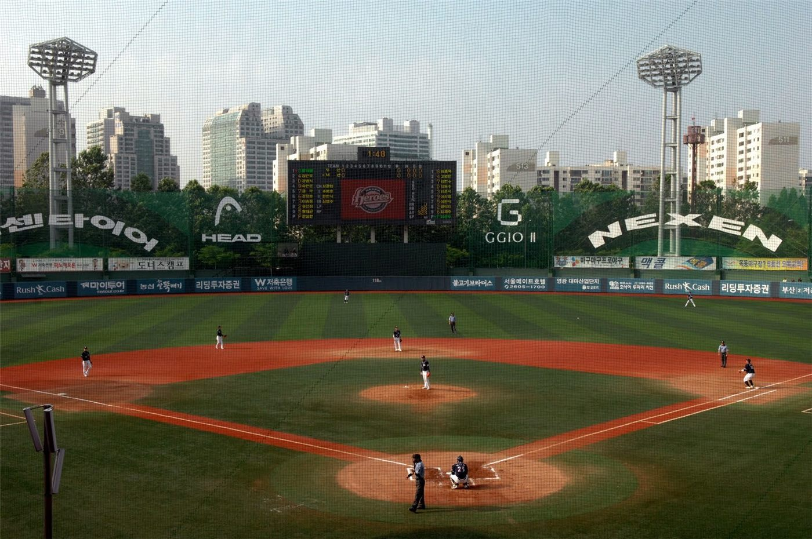

한성화교협회, 국경배 농구 선수권 공고… 가을 행사철 개막
서울 한성화교협회가 국경배 농구 선수권 대회 공고를 게시했다. 화교 사회의 가을 정기 행사 가운데 하나로, 매년 학교와 지역 단위 팀이 참가해 왔다.
주유민 기자 · 2026.09.04
橋화인소식

한성화교협회는 공고란을 통해 국경배 농구 선수권 대회 관련 안내를 게시했다.
광고 문의 · 300×250참가 신청 방법과 일정, 참가 자격 등 세부 사항은 협회 공고 원문에서 확인해야 한다.
화교 사회의 농구
농구는 한국의 화교 사회에서 오랫동안 이어져 온 종목이다. 화교 학교의 체육 활동과 지역 협회의 행사가 서로 이어지는 구조가 자리 잡아 왔다.
졸업생 팀과 재학생 팀이 함께 참가하는 형식은 세대 간 접점을 만드는 기능도 해 왔다.
가을 행사철
가을은 화교 사회의 행사가 집중되는 시기다. 체육 행사와 경로 행사, 학교 행사가 이 시기에 배치되는 경우가 많다.
여러 단체의 일정이 겹치는 경우가 있어, 참가를 계획한다면 각 협회의 공고를 함께 확인하는 것이 좋다.
참가 준비
단체 종목은 팀 구성과 등록 절차에 시간이 걸린다. 공고 게시 직후 준비를 시작하는 것이 실무적으로 유리하다.
경기 중 부상에 대비한 보험 가입 여부와 응급 대응 절차도 주최 측 안내에서 확인해 둘 사항이다.
안내
구체적 일정과 신청 방법은 한성화교협회 공고란에서 확인할 수 있다. 본지는 공고 게시 사실을 전한다.
출처·참고 (사실 확인용 — 본문은 직접 재작성)
· 한성화교협회 공고 2026-08
· 한성화교협회 공고 2026-08